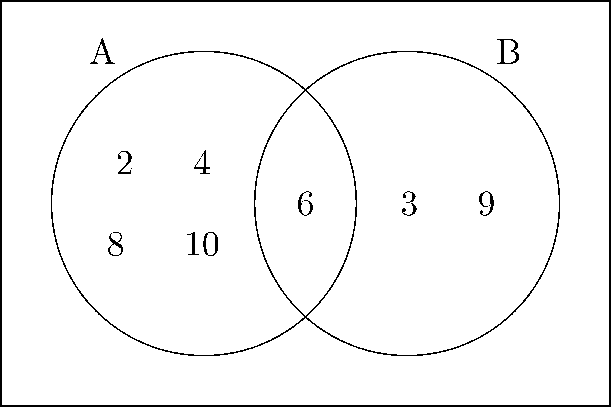
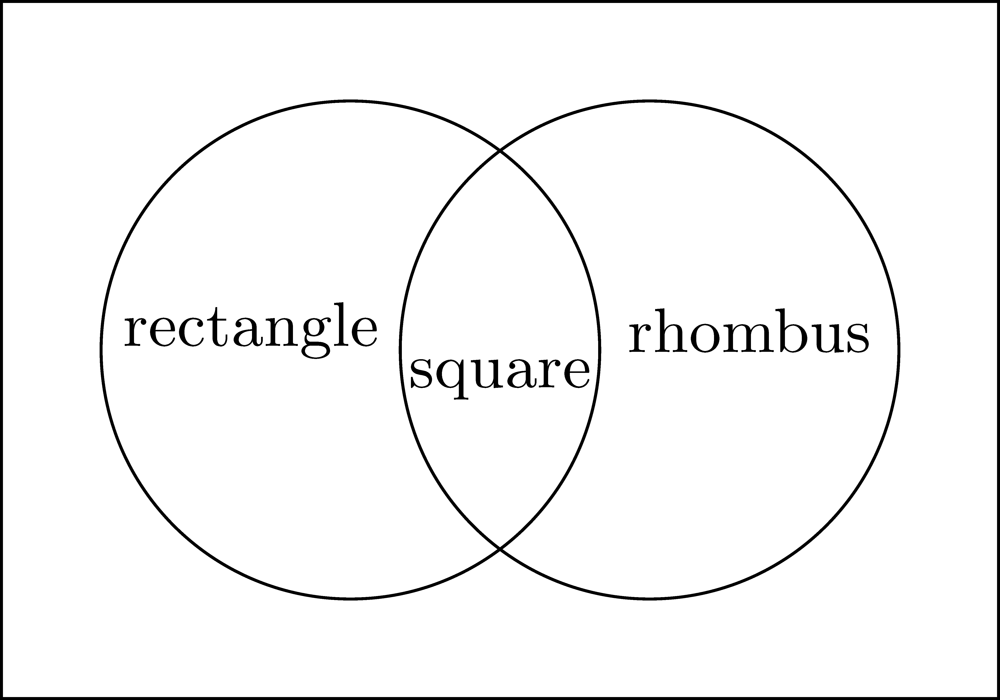
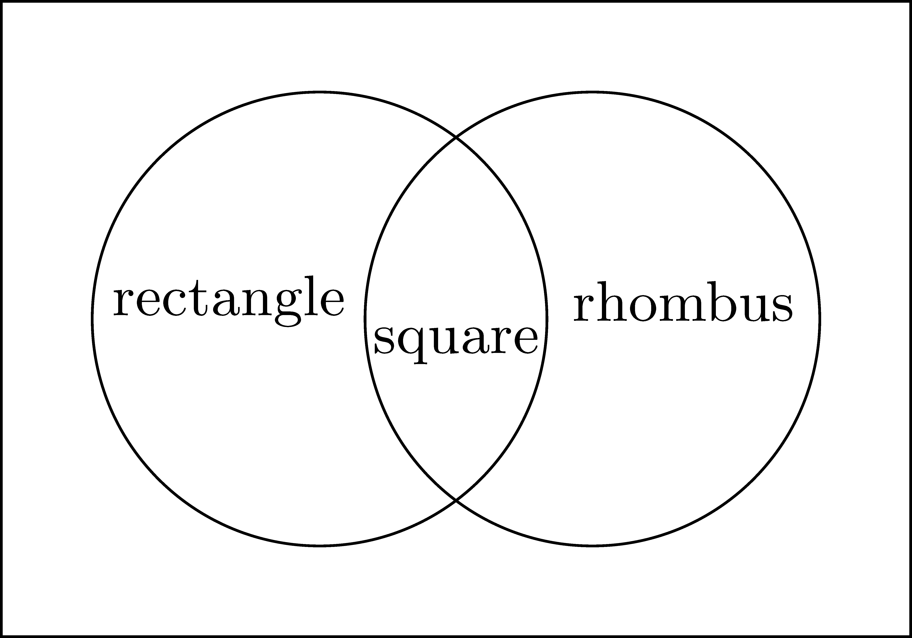

2 Set Theory
In the mid-1800s the field of mathematics went through a major shift that ended up changing the very definition of mathematics. In 1847, George Boole wrote in the introduction to The Mathematical Analysis of Logic that up to that point, “the abstractions of the modern Analysis, not less than the ostensive diagrams of the ancient Geometry, have encouraged the notion, that Mathematics are essentially, as well as actually, the Science of Magnitude” (Boole, 1847). Instead, Boole proposed a new definition, suggesting
We might justly assign it as the definitive character of a true Calculus, that it is a method resting upon the employment of Symbols, whose laws of combination are known and general, and whose results admit of a consistent interpretation… It is upon the foundation of this general principle, that I purpose to establish the Calculus of Logic, and that I claim for it a place among the acknowledged forms of Mathematical Analysis, regardless that in its object and in its instruments it must at present stand alone.

Figure 2.1: George Boole
At the time that Boole wrote the above passage, mathematics as a field shifted from the study of quantities to the study of abstract structures based on logic and set theory. This change in the definition of mathematics freed up those who studied it to move beyond structures tied to physical interpretations and applications and move to a more abstract field. The abstractification of mathematics was a powerful moment, resulting in the development of fields such as quantum mechanics, relativity, cryptography, statistics.
In this chapter we will go through some of the basics of set theory needed to understand some of the later material and to develop a common vocabulary and set of notations. We do not offer a deep treatment of set theory as there are many textbooks, specifically in the area of Discrete Math, with a more detailed coverage of it.
2.1 Sets and Subsets
The foundation of modern mathematics is the theory of sets. Informally, sets can be thought of as collections of objects. While set theory is not specifically outlined in the content standards of most states, it is mentioned in the Common Core standards. The first reference to set theory occurs in the Introduction to Kindergarten, stating:
Students use numbers, including written numerals, to represent quantities and to solve quantitative problems, such as counting objects in a set; counting out a given number of objects; comparing sets or numerals; and modeling simple joining and separating situations with sets of objects, or eventually with equations such as \(5 + 2 = 7\) and \(7 - 2 = 5\). (Kindergarten students should see addition and subtraction equations, and student writing of equations in kindergarten is encouraged, but it is not required.) Students choose, combine, and apply effective strategies for answering quantitative questions, including quickly recognizing the cardinalities of small sets of objects, counting and producing sets of given sizes, counting the number of objects in combined sets, or counting the number of objects that remain in a set after some are taken away. (NGA-CCSSO, 2010)
Set theory also makes an appearance in the high school standards related to counting and probability, as knowledge of sets is critical to understanding basic formulas in probability.
Related Content Standards
- (HSS.CP.1) Describe events as subsets of a sample space (the set of outcomes) using characteristics (or categories) of the outcomes, or as unions, intersections, or complements of other events (“or,” “and,” “not”).
We start our exploration of set theory by developing some basic notation and definitions. Cantor (1891) defined sets in the following way.
Unter einer ‘Menge’ verstehen wir jede Zusammenfassung \(M\) von bestimmten wohlunterschiedenen Objecten \(m\) unsrer Anschauung oder unseres Denkens (welche die `Elemente’ von \(M\) genannt werden) zu einem Ganzen. (p. 481)
By a ‘Set’ we mean each collection \(M\) of certain well-differentiated objects \(m\) of our perception or our thinking (which are called the `elements’ of \(M\)) as a whole. (English translation)
This definition proved to not be precise enough to avoid certain paradoxes.
Even though Cantor’s definition of a set leads to such paradoxes, we will use it as our working definition, with the detailed definition of set being a primitive notion in Zermelo-Fraenkel set theory. The Zermelo-Fraenkel axioms, combined with the axiom of choice, create the ZFC axioms upon which mathematics is built. Due to the level of abstraction involved in the axioms, we will not include a systematic coverage of the axioms in this text, but will reference them as needed.
Definition 2.1
We will define a set by the collection of elements which belong to the set.
If \(A\) is a set and \(a\) is an object that belongs to \(A\), we say that \(a\) is an element of \(A\) and denote it as \(a\in A\).
If an object \(a\) is not an element of a set \(A\), we denote that by \(a \notin A\).
Let \(A\) and \(B\) be sets. We say that \(A=B\) if and only if every element of \(A\) is an element of \(B\) and every element of \(B\) is an element of \(A\). (In the ZFC axioms, this is referred to as the axiom of extensionality.)
While the elements of a set are often written in a specific order, i.e. \(\{1,2,3\}\), the members of a set have no particular order and the same set could be written as \(\{3, 1, 2, 1\}\), with the repetition being irrelevant since the set is defined by its elements.
We also need to note that \(a\) and \(\{a\}\) are two different mathematical objects (one is the element \(a\) and the other is the set that contains the element \(a\)). So \(A = \{a, \{a\}\}\) defines a set with two distinct elements: \(a\) and \(\{a\}\). Likewise, if \(B=\{1, 2, 3, \{4\}, 5\}\), then \(4\notin B\) but \(\{4\}\in B\). So the symbol \(4\) is not an element of \(B\), but the symbol \(\{4\}\) (the set that contains the element \(4\)) does belong to \(B\). These nuances mean that we have to be very careful with our notation and how we read the mathematical symbols.
Another way to describe sets is using set-builder notation. In this notation, we describe our new set using larger sets and a set of restrictions on (or description of) which objects in the larger set we are choosing to include. For instance, we can define \(C\) to be the set of all real numbers (denoted \(\mathbb{R}\)) greater than or equal to \(3\). In this case, the larger set is the set of real numbers and the condition that the numbers are greater than or equal to three is the restriction or description. Of course we do not want to have to keep writing so much down, so we create a short-hand way of defining this set: \[ C = \left\{ x\in \mathbb{R} \middle \vert x\geq 3\right\}\] where the \(\vert\) separates the description of the larger set and the description of the restrictions. This notation is read “\(C\) is the set of all of the elements \(x\) in the real numbers such that \(x\) is greater than or equal to 3.” This set-builder notation is particularly useful when describing sets with more than just a few elements.
When sets are subsets of the real numbers, we can also describe them using interval notation. For the set \(C\) defined above, we can also write \[C=[3,\infty)\] where the closed bracket, \([\), denotes that the endpoint is contained in the set, while an open bracket, \((\), denotes that the endpoint is not contained in the set. For real numbers \(a\) and \(b\), with \(a<b\), we have the following options as intervals from \(a\) to \(b\): \[ (a,b) \quad (a,b] \quad [a,b) \quad [a,b] .\]
Once we have created notation for sets with a few elements and a large number of elements, we can describe how to denote a set without any elements.
In addition to determining how to describe sets, we must have a way to determine if two sets are the same or distinct.
A direct consequence of this definition is that the number of times an element is listed and the order of the elements is irrelevant for equality of sets. So \(\{a, b, c, d\}=\{b, a, c, c, d, b\}\) and \(\{1, 2\} \neq \{1, 2, 3\}\).
For example: \[\{6, 7 \} \subseteq \{5, 6, 7, 8\},\] \[\{x\in \mathbb{R} \vert x>5\} \subseteq \{x\in \mathbb{R} \vert x \geq 2\}, \mbox{ and }\] \[ \{a,b,c\} \subseteq \{a,b,c\}. \] Notice that the first two examples are proper subsets.
It is important to distinguish between the phrases ‘element of’ and ‘contained in’ when discussing sets. If \(A= \{a,b,c\}\), then we say that \(a\) is an element of \(A\), while \(\{a\}\) is contained in \(A\)
Since the empty set has no elements, it is by default a subset of every set. Similarly, every set is a subset of itself.
We often need to prove that two sets are equal to one another, and we do not have the elements of the set listed out. In these situations the following theorem often proves useful.
Proof. Since the statement of the theorem is an ‘if and only if’ statement, there are actually two components that need to be proven. We need to first prove that if \(A=B\) then \(A \subseteq B\) and \(B \subseteq A\). The second statement that needs proving is the converse: having \(A \subseteq B\) and \(B \subseteq A\) implies that \(A=B\). We will complete both arguments using the corresponding definitions.
Assume that \(A=B\). Then the definition of set equality states that every element of \(A\) is an element of \(B\). This means that \(A\) meets the definition of a subset of \(B\). That is: \(A\subseteq B\). In addition, the assumption that \(A=B\) gives us that every element of \(B\) is an element of \(A\). As a result, \(B\subseteq A\). Thus \[A=B \Rightarrow A\subseteq B \mbox{ and } B\subseteq A.\]
To prove the converse statement, we assume that \(A \subseteq B\) and \(B \subseteq A\). Thus, we have that every element of \(A\) is also an element of \(B\) and every element of \(B\) is also an element of \(A\). This is the definition of set equality and so we have that \(A=B\).
We have therefore proven both implications, and thus the theorem is proven.
2.1.1 Venn Diagrams
In order to better understand relationships between subsets of a larger set, it is sometimes helpful to represent the relationships with a Venn diagram. In these diagrams, we use circle-like figures to represent sets, with everything inside the circle being inside of the set and everything outside of the circle being outside of the set.
Example 2.3 Let \(A=\{2, 4, 6, 8, 10\}\) and \(B=\{3, 6, 9\}\). Then these sets could be represented by a Venn diagram such as the one below.

As previously discussed, sets do not have to just be composed of numbers. Moreover, sets can have many different relationships between them, as seen in Figure . If a set is a subset of a second set, then they are visualized as one region inside of the other region. If there are elements shared between two sets, but are not known to have a subset relationship, then they are visualized as overlapping regions. If no elements of the two sets are the same, then they are represented as two non-overlapping regions. In the next section we define vocabulary to describe these different types of relationships and how they are combined in different ways.

 

Figure 2.2: Sample Venn diagrams
2.1.2 List of Sets of Numbers
In order to help with terminology we will provide some notation for some of the basic sets used in the text.
We define the natural numbers as \[\mathbb{N}=\{0,1,2,3,4,5,\ldots\}.\] This is distinct from some definitions of the natural numbers that do not include the number \(0\). When a text defines the natural numbers without the \(0\), it also defines the whole numbers to be our definition of the natural numbers. We are including \(0\) due to the method in which we define the natural numbers in Chapter .
We label the integers as \[\mathbb{Z} = \{\ldots, -4, -3, -2, -1, 0, 1, 2, 3, 4, \ldots\},\] which we will define in detail in Section .
We label the set of rational numbers as \(\mathbb{Q}\) and the real numbers as \(\mathbb{R}\), the detailed definitions of which are in Sections , respectively.
The complex numbers, \(\mathbb{C}\), are defined and studied in Section .
For the integers, rationals and reals, we define \(\mathbb{Z}^+\), \(\mathbb{Q}^+\), and \(\mathbb{R}^+\) to be the positive elements of the set, those that are greater than zero.
We visualize the nested nature of these number systems in the Venn diagram in Figure 2.3.

Figure 2.3: Sample Venn diagrams
2.1.3 Exercises
Answer the following as true or false. If false, explain why the statement is not true.
\(\emptyset \subseteq \{f,u,n,t,i,m,e,s\}\)
\(\{a,b\} \in \{a,b,c\}\)
\(\{0 \}\ = \emptyset\)
\(\{f,u,n,f,u,n \}=\{f,u,n \}\)
\(\{0,0\} \subseteq \{0,0,1,1,2,2\}\)
Let \(A=\{1, 2, 3\}\), \(B=\{a, b, c\}\), and \(C=\{1, a, 2, b, 3, c\}\). Answer the following as true or false. If false, explain why the statement is not true.
\(A \subseteq A\)
\(A\supseteq C\)
\(A=B\)
\(A \nsubseteq B\)
Recall that for set \(A\), \(\mathcal{P}(A)\) is the power set of \(A\).
Let \(A=\{a,b\}\). Write the set of \(\mathcal{P}(A)\) by listing its elements.
Let \(A\) be a set with \(n\) elements in it.
How many elements are in \(\mathcal{P}(A)\) if \(n=3\)?
How many elements are in \(\mathcal{P}(A)\) if \(n=4\)?
How many elements are in \(\mathcal{P}(A)\) if \(n\) is an unknown natural number?
Some textbooks describe a set as ``a well-defined collection of objects’’ which means that the inclusion criteria that helps you decide what should be in the set is clearly specified. Classify each of the following sets as well-defined or not. If you identify a set as not well-defined, give two possible well-defined sets that would satisfy the original description.
\(\{x \vert x>0\}\)
The set of students at The University of Awesome who are currently enrolled in a class that has a 100-level designation.
\(\{x\vert x \textrm{ is a letter in my first name}\}\)
The set of my friends.
\(A_n=\{x\in \mathbb{Z} \vert n\leq x\leq n+3\}\)
Let \(A=\{1, 2, 3, 4\}\), \(B=\{7,8,9\}\), and \(C=\{3,4,5,6,7,8,9\}\). Using the most appropriate template of the Venn diagrams shown in Figure , fill in the regions with the elements from:
Sets \(A\) and \(B\).
Sets \(A\) and \(C\).
Sets \(B\) and \(C\).
Sets \(A\), \(B\), and \(C\) (you will have to make a new Venn diagram template).
2.2 Algebra of Sets
Now that we understand the basic definitions involving sets, we examine set operations. These will allow us to create new sets from given sets.
The shaded regions in Figure 2.4 illustrate each set relationship in terms of general sets \(A\) and \(B\). We can also write the union and intersection of sets in terms of set-builder notation: \[A\cup B = \{x \vert x\in A \mbox{ or } x\in B\} \quad \mbox{ and } \quad A\cap B =\{x\vert x\in A \mbox{ and } x\in B\}.\]

Figure 2.4: The union and intersection of two sets
Let’s look at a couple of examples to better understand these unions and intersections.
Example 2.7 Let \(A = \{ x\in \mathbb{R} \: \vert \: x > 5\}\) and \(B=\{x \in \mathbb{R} \: \vert \: x < 8\}\). Then \(A\cup B\) would be all real numbers, since any real number is either less than 8 or greater than 5. And \(A\cap B\) would be the real numbers between 5 and 8. These can also be represented on number lines, where the shaded lines and filled dots are included in the set, with open dots and unshaded lines not being included in the set.

The following theorem identifies properties of the union as an operation on sets that follow from the definition.
Theorem 2.2 Let \(A\), \(B\), and \(C\) be sets. Then we have the following:
\(A\cup \emptyset = A\)
\(A \cup A = A\)
\(A \cup B = B \cup A\)
\(A \cup (B\cup C ) = (A\cup B) \cup C\)
\(A \subseteq A \cup B\)
If \(A \subseteq B\), then \(A\cup B=B\)
Proof. The first two statements follow directly from the definition of the union. The empty set has no elements, making its union with \(A\) equal to \(A\). Because \(A\) and \(A\) have the same elements, the union must also be \(A\).
The third statement suggests that the set operation “union” is commutative, in that the order of the operation does not matter. The proof follows from properties of symbolic logic in relation to the use of the “or” statement in the definition of the union.
The fourth statement in the theorem is used to expand the definition of union, which is only defined for a pair of sets, to more than two sets. A further consequence of statement four is that the method of pairing sets the under the operation of union is irrelevant. We show this by proving the two statements \(A \cup (B\cup C ) \subseteq (A\cup B) \cup C\) and \((A\cup B) \cup C \subseteq A \cup (B\cup C)\) (see Theorem ). In order to show the first containment, we let \(x\in A \cup (B\cup C )\) be a generic element. Then by the definition of the union of sets, \(x\in A\) or \(x\in (B\cup C)\). We will then break this statement into two cases.
Case 1. If \(x\in A\), then by the definition of unions \(x\in (A \cup B)\). Then using the definitions of unions again, \(x \in ((A \cup B) \cup C)\).
Case 2. If \(x\in (B\cup C)\), then \(x\in B\) or \(x\in C\). If \(x\in B\), then \(x\in (A\cup B)\) and also \(x\in ((A\cup B) \cup C)\). If \(x\in C\), then \(x\in ((A\cup B) \cup C)\).
So in either case, \(x \in A \cup (B\cup C)\) implies that \(x\in (A\cup B) \cup C\). So \(A\cup (B\cup C) \subseteq (A\cup B)\cup C\). The proof of the reverse containment is nearly identical.
We leave the last two statements as exercises.Similar to the union, the following theorem demonstrates how the intersection of sets works as an operation on sets. The proofs for each statement are similar to that of the unions so we will leave the proof of this theorem as an exercise.
Theorem 2.3 Let \(A\), \(B\), and \(C\) be sets. Then we have the following
\(A\cap \emptyset = \emptyset\)
\(A \cap A = A\)
\(A \cap B = B \cap A\)
\(A \cap (B\cap C ) = (A\cap B) \cap C\)
If \(A \subseteq B\), then \(A \cap B = A\)
Now that we know how unions and intersections behave by themselves, we examine how they interact with each other.
These relationships are diagrammed in Figure 2.5.

Figure 2.5: Venn Diagrams for Set Distribuions
Proof. As each of these are proofs of equality of sets, we will need to complete the proofs showing that each set is contained in the other (see Theorem 2.1). We prove Part 1 and leave Part 2 as an exercise.
Let \(x\in A \cap (B \cup C)\). Then \(x\in A\) and \(x\in (B\cup C)\). This yields two cases: \(x\in A\) and \(x\in B\), or \(x\in A\) and \(x\in C\). This is equivalent to \(x \in (A\cap B) \cup (A\cap C)\). Thus \(A \cap (B \cup C) \subseteq (A \cap B) \cup (A \cap C)\).
If \(x\in (A \cap B) \cup (A \cap C)\), then we have to examine two cases: \(x\in (A\cap B)\) or \(x\in (A \cap C)\).
Case 1. If \(x\in (A\cap B)\), then \(x\in A\) and \(x\in B\). Since \(x\in B\), we know that \(x\in (B\cup C)\). Thus \(x\in A \cap (B\cup C)\).
Case 2. If \(x \in (A\cap C)\), then \(x\in A\) and \(x\in C\). Since \(x\in C\), we know that \(x \in (B\cup C)\). Thus \(x \in A \cap (B\cup C)\).
These results imply that \((A \cap B) \cup (A \cap C) \subseteq A \cap (B \cup C)\). Thus, the Part 1 of the theorem is proven.2.2.1 Set Complements
When working on a problem, we usually describe several sets, with an underlying assumption that the sets referenced contain elements from some common, larger set. We call a set that contains all of the elements considered for a particular situation a universal set.

Figure 2.6: Set Complement and Set Difference
For a given set \(A\) in universal set \(U\), the complement of a set identifies everything that is in the universal set except for things in set \(A\). This is often useful, however there are times when it is important to consider the elements that are in one set, but not in another, without reference to the universal set.
Let’s revisit our previous examples to understand this idea of a set difference.
2.2.2 De Morgan’s Laws
In the same year as the seminal work of Boole (1847) that started mathematics as a theoretical discipline, Augustus De Morgan published a foundational work in logic (De Morgan, 1847). In this book, De Morgan defines and describes symbolic mathematical logic. His work has become the foundation for our current mathematical system. One of the key components of this work examines the complements of intersections and unions (De Morgan, 1847, p. 69).
Proof. Because we are proving that two sets are equal we need to prove that the sets are subsets of each other. Here we will prove that \(\left(A \cap B\right)^c = A^c \cup B^c\) and leave the other proof as an exercise.
(Proof that \(\left(A \cap B\right)^c \subseteq A^c \cup B^c\).):
Let \(x\in \left(A \cap B\right)^c\). So \(x\) is not in \(A\cap B\). \(x\) is not in both \(A\) and \(B\).
Case 1. If \(x\in A\), then \(x\notin B\). So \(x\in B^c\).
Case 2. If \(x\notin A\), then \(x\in A^c\).
So either way, \(x\) is in \(A^c\) or \(x\) is in \(B^c\) (\(x\in A^c \cup B^c\)). Therefore, \(\left(A \cap B\right)^c \subseteq A^c \cup B^c\).
(Proof that \(A^c \cup B^c \subseteq \left(A \cap B\right)^c\).):
Let \(x \in A^c \cup B^c\).
Case 1. \(x\in A^c\). Then \(x\notin A\). So \(x\notin A\cap B\). So \(x\in (A\cap B)^c\).
Case 2. \(x\in B^c\). Then \(x\notin B\). So \(x\notin A\cap B\). So \(x\in A\cap B)^c\).
Therefore, \(A^c \cup B^c \subseteq \left(A \cap B\right)^c\)
Therefore, \(\left(A \cap B\right)^c = A^c \cup B^c\).It is also helpful to understand De Morgan’s laws by looking at the corresponding Venn diagrams, shown in Figure 2.7.

Figure 2.7: Venn diagrams for De Morgan’s laws for pairs of sets
2.2.3 Cartesian Products
The previous sections have considered set operations between two sets that exist in the same universal set. Sets can also be combined to create new sets that exist in a universal set that differs from those of the sets used to create it. The collection of set operations that do this allows us to use sets to create multidimensional systems such as ordered pairs.
The most common Cartesian product in the secondary mathematics curriculum is real plane, \(\mathbb{R} \times \mathbb{R}\), which is often denoted by \[\mathbb{R}^2:= \left\{ (x,y) \vert x,y\in \mathbb{R} \right\}.\]
Related Content Standards
- (5.G.1) Use a pair of perpendicular number lines, called axes, to define a coordinate system, with the intersection of the lines (the origin) arranged to coincide with the \(0\) on each line and a given point in the plane located by using an ordered pair of numbers, called its coordinates. Understand that the first number indicates how far to travel from the origin in the direction of one axis, and the second number indicates how far to travel in the direction of the second axis, with the convention that the names of the two axes and the coordinates correspond (e.g., \(x\)-axis and \(x\)-coordinate, \(y\)-axis and \(y\)-coordinate).
The concept of the Cartesian product can be generalized to more than a pair of sets, for example \[\mathbb{R}^3:= \left\{ (x,y,z) \vert x,y,z\in \mathbb{R} \right\}\] is the three dimensional Cartesian space where each coordinate is a real number.
Theorem 2.6 It is sometimes helpful to summarize all of the properties of algebra on sets into a single location.
Let all sets referred to below be subsets of a universal set \(U\).
(Commutative Laws) For all sets \(A\) and \(B\), \[(a) \: A \cup B = B \cup A \quad \mbox{and} \quad (b) \: A \cap B = B \cap A\]
(Associative Laws) For all sets \(A\), \(B\), and \(C\), \[(a) \: (A\cup B)\cup C = A \cup (B \cup C) \quad \mbox{and} \quad (b) \: (A \cap B) \cap C = A \cap (B\cap C)\]
(Distributive Laws) For all sets \(A\), \(B\), and \(C\), \[(a) \: A \cup (B \cap C) = (A \cup B)\cap (A \cup C) \quad \mbox{and} \quad (b) \: A \cap (B \cup C) = (A \cap B)\cup (A \cap C)\]
(Identity Laws) For all sets \(A\), \[(a) \: A \cup \emptyset = A \quad \mbox{and} \quad (b) \: A \cap U = A\]
(Complement Laws) \[(a) \: A \cup A^c = U \quad \mbox{and} \quad (b) \: A \cap A^c = \emptyset\]
(Double Complement Law) For all sets \(A\), \[(A^c)^c =A\]
(Idempotent Laws) For all sets \(A\), \[(a) \: A\cup A=A \quad \mbox{and} \quad (b) \: A \cap A =A\]
(Universal Bound Laws) For all sets \(A\), \[(a) \: A \cup U = U\quad \mbox{and} \quad (b) \: A \cap \emptyset = \emptyset\]
(De Morgan’s Laws) For all sets \(A\) and \(B\), \[(a) \: (A \cup B)^c = A^c \cap B^c\quad \mbox{and} \quad (b) \: (A \cap B)^c = A^c \cup B^c\]
(Absorption Laws) For all sets \(A\) and \(B\), \[(a) \: A \cup (A \cap B) = A \quad \mbox{and} \quad (b) \: A \cap (A \cup B ) = A\]
(Complements of \(U\) and \(\emptyset\)) \[(a) \: U^c = \emptyset \quad \mbox{and} \quad (b) \: \emptyset^c = U\]
(Set Difference Law) For all sets \(A\) and \(B\), \[A\setminus B = A \cap B^c\]
2.2.4 Exercises
Middle and high school students often struggle to remember the difference between union and intersection.
- Describe a memory trick to help students remember which symbol goes with which of the two operations.
- Review the definitions of the intersection and union of two sets. What key words separate the two definitions from each other?
- Some students, when first learning the mathematical definition of union, think that the definition excludes objects that are in both sets. These students, when given two sets and asked to find \(A \cup B\) will include the items that are in \(A\) only and \(B\) only. They exclude things in \(A \cap B\). What might be the source of this misconception?
- Define a non-numeric universe and two sets, \(A\) and \(B\), in your universe such that \(A \cap B \neq \emptyset\). Describe, using words, each of the following sets:
- \(A \cup B\)
- \(A \cap B\)
- \(A^{C}\)
Let \(A = \{1, 3, 5, 7, 9\}\), \(B=\{1, 2, 3, 4\}\), and \(C=\{3, 6, 9\}\). List the elements of each of the specified sets.
- \(A \cap B\)
- \(A \cup B\)
- \(A \cup C\)
- \((A\cap B) \cup C\)
- \(A \cap (B \cup C)\)
- \(A \times B\)
- \(B \times (A\cap C)\)
For this exercise, assume that \(\mathbb{R}\) is the universal set. For any natural number, \(n\), define \(n\mathbb{Z} = \{nx \vert x \in \mathbb{Z}\}\). Answer the following as true or false. If false, explain why the statement is not true.
- \((2\mathbb{Z})^C = \{2x+1 \vert x \in \mathbb{Z}\}\)
- \(\mathbb{R}\setminus \mathbb{Z}=\mathbb{Z}^C\)
- \(5\mathbb{Z} \cap \{2x+1 \vert x \in \mathbb{Z}\} = 5\mathbb{Z}\)
- \(5\mathbb{Z} \cap 4\mathbb{Z} = 20\mathbb{Z}\)
- \(2\mathbb{Z}\setminus (4\mathbb{Z} \cup 6\mathbb{Z})= \emptyset\)
- \(3\mathbb{Z}\setminus 2\mathbb{Z}=\{3(2x-1) \vert x\in \mathbb{Z} \textrm{ and } x\geq 0\}\)
Let \(A\) and \(B\) be sets. Prove that \(A\subseteq A\cup B\).
Let \(A\) and \(B\) be sets. Prove that if \(A\subseteq B\), then \(A\cup B=B\).
Prove Theorem 2.3.
Prove Part 2 of Theorem 2.4.
Prove that for sets \(A\) and \(B\), \((A\cap B)^c = A^c \cup B^c\) and \((A\cup B)^c=A^c\cap B^c\)
Write \((A\setminus B)\cup (B\setminus A)\) in terms of just unions, intersections, and complements, then simplify your expression.
Often when doing mathematics, the set you are working with or within is left unstated.
- Under what conditions is it important to be explicit with students about the set you are working within?
- What set do you assume you are working in when:
- You are figuring out how much something will cost?
- You are figuring out what proportion of a pizza to give everyone?
- You are determining what the temperature will be if it is predicted to drop 20 degrees overnight?
Construct an algebraic proof for the given statement. Cite a property from Theorem 2.6 for every step.
For all sets \(A\) and \(B\), \[A \cup (B-A)= A \cup B\]
2.3 Collections of Sets
Now that we know how to combine pairs of sets, we can inductively define unions and intersections for a finite or infinite number of sets.
When we are dealing with more than one or two related but distinct sets we often use another set as an index set in order to more easily describe and distinguish the sets in the collection.
Using indexing sets, we can then define the union and intersection of a collection of sets.
An indexed collection of sets \(\{A_i\}_{i\in S}\) is called mutually disjoint if, for any \(i,j\in S\) with \(i\neq j\), \(A_i \cap A_j = \emptyset\). The sets in the previous example are mutually disjoint since \([n,n+1) \cap [m,m+1) = \emptyset\) if \(m\neq n\).
Example 2.13 For each positive integer \(n\), (\(n\in \mathbb{N}\)), let \[S_n= \left\{x\in \mathbb{R}\middle \vert \frac{-1}{n} < x < \frac{1}{n} \right\}.\]
\[S_1=(-1,1)\]\[S_2=(\frac{-1}{2}, \frac{1}{2})\]
 \[S_3=(\frac{-1}{3}, \frac{1}{3})\]
\[S_3=(\frac{-1}{3}, \frac{1}{3})\]

Then we can see that for any \(i<j\), we have that \(S_i\cap S_j = S_j\) and \(S_i \cup S_j = S_i\).
We can also take the union and intersections over the entire collection of sets. \[ \bigcup_{n\in \mathbb{N}} S_n = (-1,1) \quad \mbox{ and } \quad \bigcap_{n\in \mathbb{N}} S_n = \{0\}.\]
The above example is also an example of what is called a nested collection of sets.
Using the ideas of indexing sets and families of sets, we can generalize De Morgan’s Laws to a general collection of sets, the proofs of which are very similar to the proof in the case of two sets.
2.3.1 Exercises
For each of the following collections of sets:
\[\displaystyle{\mathcal{A} = \left\{ \left[ \frac{1}{n},n\right) \right\}_{n=2,3,4,\ldots }}\]
\[\displaystyle{\mathcal{B} = \left\{ \left( n,\infty \right) \right\}_{n=0,1,2,3,4,5,\ldots} }\]
\[\displaystyle{\mathcal{C} = \left\{ \left[ -n, n \right] \right\}_{n=0,1,2,3,4,5,\ldots }}\]
\[\displaystyle{\mathcal{D} = \left\{ [x,x+1)\right\}_{x\in \mathbb{R}}}\]
\[\displaystyle{\mathcal{E} = \left\{ \{z\in \mathbb{C}\middle \vert|z|=r\}\right\}_{r\in \mathbb{R}^+} }\]
\[\displaystyle{\mathcal{F} = \left\{ \{n\in \mathbb{Z}\middle \vert n=3k+j \mbox{ for some } k\in \mathbb{Z}\}\right\}_{j=0,1,2}}\]
- Determine if the sets are mutually disjoint
- Determine if the collection is nested
- Find the union of the collection
References
Boole, G. (1847). The mathematical analysis of logic. Macmillan, Barclay, & Macmillan.
Cantor, G. (1891). Ueber eine elementare frage der mannigfaltigkeitslehre. Jahresbericht Der Deutschen Mathematiker-Verreinigung, 1890/91, 75–78. https://www.digizeitschriften.de/dms/img/?PID=GDZPPN002113910
De Morgan, A. (1847). Formal logic; or, the calculus of inference, necessary and probable. Taylor; Walton.
NGA-CCSSO. (2010). Common core state standards mathematics. National Governors Association Center for Best Practices, Council of Chief State School Officers.